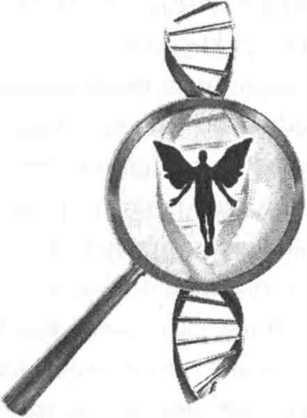
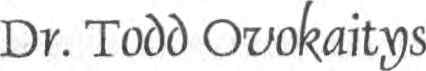

Dr. Todd Ovokaitys

Yazan: Dr. Todd Ovokaitys
Watson ve Crick, DNA’nın çift sarmal yapısını gözler önüne serdiklerinden beri, bu zarif görüntü, kendi yapımıza derinlemesine bakma ve yaşamı üreten işlevlere dönüşen güzelliği ve formu bulma yeteneğimizi yansıtan kültürel bir ikon olagelmiştir. Einstein’ın bir fotoğrafının yirminci yüzyıl dehası fikrini çağrıştırmasına benzer bir biçimde, DNA’nın resmi de hem estetik takdiri, hem de bilinçli varlıklar olarak kendi yapımızla ilgili derin gerçekleri keşfetmiş olmayı çağrıştırır.
DNA’nın kimyasal formunun ve yapısının dönüm noktası oluşturan keşfinin ardından, bu çalışma DNA’nın şifresini çözmeye doğru ilerledi. Birkaç on yıl içinde, DNA’nın üçlü şifresi tamamıyla çözüldü ve bu başarı insanın bilimsel dehasının yeni bir kanıtını oluşturdu. Üçlü şifrenin anlamı şudur: DNA’nın her üç bazı, bir protein oluşturmaya başlamak, belli bir amino asit yapı taşını eklemek ya da yeni molekülü oluşturma işlemini durdurmak için belirli bir talimata dönüşür. Keşif düzeyinde, bilimin bu şifreyi neredeyse tamamıyla çözdüğü, böylece sağlık ve biyokimya bilimlerini dönüştürmeye hazır olduğu düşünülmüştü.
Temel şifre anlaşılmış olmakla birlikte, küçük bir organizmadaki şifrenin bile uzunluğu, bir sonraki görevi, yani bir insanın tüm şifresinin haritasını çıkarma işini göz korkutucu kılmıştı. Sonra, Johns Hopkins Üniversitesi Tıp Fakültesinden iki bilim adamı bu zor görevi mümkün kılan gereci keşfetti. Dr. Hamilton O. Smith ve Dr. Daniel Nathans, kesme enzimleri denen DNA enzimleri türüyle ilgili olarak dönüm noktası oluşturan bir araştırma yaptılar. Kısaca, bu enzimler, sadece belli bir DNA bazları dizisi mevcutsa DNA’yı kesen çok belirli DNA makasları gibiydiler. DNA’yı belli yerlerde sistematik olarak kesebilerek ve sonra bu daha küçük, daha idare edilebilir dizileri üst üste bindirerek, bir canlı organizmanın bütün DNA dizisi şifresini belirlemek mümkün hale gelmişti.
DNA bilimsel keşfinin bu veçhesi benim için özellikle etkileyiciydi, çünkü bu araştırmaya Nobel Ödülü verildiği sırada ben Johns Hopkins Üniversitesinde bir tıp öğrencisiydim. Sadece orada bulunmakla kalmıyordum, o sırada Dr. Nathans’ın ders verdiği mikrobiyoloji laboratuarı bölümündeydim. Dr. Nathans öyle sessiz, yumuşak başlı biri gibi görünüyordu ki, bu mütevazı laboratuar öğretmeninin muazzam bir DNA buluşuyla bir Nobel Ödülü kazandığını öğrendiğimde çok şaşırmış ve sevinmiştim. Sadece bu kadar da değil, o gün öğretmenim ve sınıf arkadaşlarımla birlikte deney kaplarımızla şampanya içerek öğretmenimizi, araştırmayı birlikte yaptığı meslektaşını ve bilimin kaydettiği ilerlemeyi kutlamıştım.
Bu keşif, Kerry Mullis adlı San Diegolu bir bilim adamının keşifleriyle birleştiğinde, sahne DNA araştırması tarihindeki en büyük zorluğun, bütün insan DNA’sı şifresinin dizisini belirlemenin peşine düşmeye hazır olmuştu. Kerry Mullis, polimeraz zincirleme reaksiyonu denen bir yöntem tasarlamış ve bu buluşuyla bir Nobel Ödülü kazanmıştı. Bu yöntemin nasıl çalıştığının ayrıntılarına girmeden, bunun belirli DNA dizilerinin milyonlarca kat çoğaltılmasını sağlayan dahice bir yöntem olduğunu söyleyelim. Bunların ve özellikle dizilimin otomasyonundaki daha ileri teknik evrimlerin birleştirilmesiyle, İnsan Genomu Projesi’ne başlandı. Hükümetler, üniversiteler ve özel endüstri tarafından desteklenen bu muazzam görev birkaç yıl önce başarıyla tamamlandı. İnsanlık tarihinde ilk kez, bir insanı üreten DNA bilgisinin tam formülünü öğrenmiştik. Harflere çevrilen üç milyar baz çiftleri, yaklaşık üç yüz bin sayfalık bir ders kitabı oluşturabilirdi! Böylesine inanılmaz bir karmaşıklık ve ayrıntı tamamen çözülmüştü.
Bu muazzam başarıdan itibaren, tıp biliminin birçok hastalığı iyileştirecek anahtara sahip olduğu, hatta insan ömrünü daha önce olanaksız görülen ölçüde uzatacak şifreleri öğrenebileceği düşünüldü. Bu araştırma sürecinde, bir insanı oluşturmak için daha önce inanıldığından daha az -genler denen- şifre dizisinin gerektiğini gösteren şaşırtıcı bir keşifte bulunuldu. Daha önce, İnsan Genomu’nun, yani insanın genetik şifresinin yirmi üç kromozom çiftinin toplam DNA şifresinin en az yüz bin geni barındırdığı düşünülüyordu. Bir insanı şifrelemek için sadece otuz bin ila kırk bin genin gerekli olduğunun öğrenilmesi şaşırtıcı olmuştu. Daha da şaşırtıcı olan, İnsan Genomu’nun sadece küçük bir parçasının genlerin şifrelerini oluşturan baz dizilerine sahip olduğunun keşfedilmesiydi. Geriye kalan bölüm, bir ses bandında gerçek şifreleme dizileri arasında bulunan ve hiçbir bilgi içermeyen aralıklar gibi görünüyordu. Şaşırtıcı keşif şuydu ki, ilk başta “çöp DNA” olarak etiketlenen bu şifrelemeyici DNA bütün insan şifresinin % 97’ sini oluşturuyordu!
Sistemin bu kadar büyük bölümünün şifrelemeyici olmasının nedeni neydi? Eğer onun belli bir amacı yok idiyse, organizmaya bir yararı olmayan özellikleri pek korumayan evrimsel baskılara nasıl dayanmıştı? Şifrelemeyici DNA’nın yüksek oranı, onun genlerin şifreleyici dizilerinin yaptıkları şeyin düzenlenmesinde bir biçimde önemli olduğunu ima eder. Biz insan yaşamını üreten otuz bin ila kırk bin anahtar proteini inşa etmek için formüllere sahiptik; ama bu durum, binlerce malzemeyi içeren bir yemek tarifine sahip olup da karışımı nasıl yapacağımızla ilgili talimatlara sahip olmamaya benziyordu. “Çöp DNA”nın gizeminin araştırılması sürdürülürken, açıklamalardan biri, bu gizemli bölümün tarifin malzemelerinin bütün şifrenin düzenleyicileri olarak nasıl bir araya getirildikleriyle ilişkili olduğudur.
Hastalıkların tedavisinde ilerlemelerle, kalıtımsal eğilimleri yok etmekle ve insan olmanın kalitesini artırmakla ilgili olağanüstü vaadin gerçekleşebilmesi için, önce şifrenin düzenlenmesinin karmaşıklıklarının daha tam olarak anlaşılması gerekecektir. Belirli düzenleyici sistemlerin anlaşılmasında ilerlemeler kaydedilmiş olmakla birlikte, bu düzenlemenin içsel işleyişlerinin tam olarak ortaya çıkarılması için, şifrelemeyici DNA unsurlarının, yani genomik çok katlı pastanın büyük bölümünün eylemlerinin ve rollerinin daha tam bir bilgisi gerekecektir.
Son altmış yılda DNA’yı ve genetik şifreyi anlamakta kaydedilen şaşırtıcı ilerleme, bu sistemin işleyişinin daha derin işlevlerinin gizemine de kapıyı açmaktadır. Bilim tarihinde, çoğu kez, bir bilimciyi keşfe götüren şey sezgisel bir sıçramadır; gördüğü DNA vizyonunun Kerry Mullis’e genomik bilimde devrim yapan polimeraz zincirleme reaksiyonunu keşfetmesini sağlayan içgörüyü vermesi gibi.
Çok satan spiritüel kitapların uluslararası üne sahip yazarı Lee Carroll’un benden bu kitaba bir önsöz yazmamı istemesinin nedeni, DNA’nın katı bilimsel dünyası ile DNA’nın içsel vizyonlarının sezgisel, kanıtlanamaz dünyası arasında bir köprü oluşturmaktı. Böyle vizyonlar, hem bilgi hem de pratik kullanım için, DNA’nın nihai anlayışına bir katkıda bulunabilir de bulunmayabilir de, ancak birçok bilimsel buluş bir anlık içgörüyle müjdelenmiş, bunu daha derin bilgiyi ortaya çıkarmak için yapılan uzun ve zor bir çalışma izlemiştir.
Tıp fakültesindeki ikinci yılında kimya derslerine katılan bir öğrenci, genellikle, organik kimyanın başlamasının ve sonra bir alan olarak gelişmesinin yolunu açan sezgisel sıçramanın iyi bilinen ve sık sık yinelenen bir örneğini öğrenir. Bu, Kekule adıyla bilinen ve benzen molekülünün yapısını belirlemeye çalışan araştırmacılar arasında yer alan bir kimyacının öyküsüdür. Araştırmalarda, altı karbon atomu ile altı hidrojen atomunun birleşimi, küçük organik moleküllerden beklenen davranışa uymamıştı (bu anlamda organik, birbirine bağlı karbon atomlarının bir omurgası anlamına gelmektedir). Bir gece rüyasında, Kekule, kuyruğunu yutan bir yılan gördü. Bu görünüşte ilişkisiz görüntü Kekule’ye, benzeni, sanki o kuyruğunu yutan bir yılanmış gibi bir halka molekül olarak araştırma ilhamını verdi. Bu vahiy, Kekule’nin, benzenin halka yapısını yeni moleküler bağlayıcı özelliklerle kanıtlamasını sağladı ve bu modern organik kimyanın gelişiminin yolunu açtı.
Kekule’nin gördüğü rüyada ona ilham veren imge, aslında kadim bir imgeydi. Kadim gizem okulları, Uroboros adıyla bilinen bu imgeyi, kuyruğunu yutan bir yılan, bir ejderha ya da bir kertenkele olarak resmetmişlerdi. Bu imgenin, döngüler halinde tekrarlanan kalıplarıyla büyük varoluş çemberini temsil ettiği düşünülmüştü ve bu Hermetik simya araştırması geleneğinde iyi bilinir.
Eğer bir süreç, bütün bir çemberden geçip öncekinden biraz daha gelişmiş olarak çemberin başlangıcına dönerse, ortaya çıkan kalıp, her bir döngüsel tamamlanışta niteliksel olarak yükselen bir çemberdir. Bu bir çemberden, bir daireden çok, bir sarmalı işaret eder. Yorumbilim olarak tanımlanan bir öğrenim sürecinde, aradaki öğrenimden sonra aynı bilgiye geri dönüş, aynı bilgiden daha büyük öğrenim ve içgörü elde etmeyi sağlar ve buna yorumbilim sarmalı denir. DNA’nın esas geometrisi bir sarmaldır; onun bu formu, gelişim ve tekâmül döngüleriyle elde edilen yorumbilim öğrenimini akla getirir.
DNA’nın çift sarmal yapısı, iki zıt sarmalın birleşiminden oluşur. Bu çift sarmal, eşzamanlı olarak, aynı anda her iki yönde sarmal çizer. Bu ayrıca, “yukarısı nasılsa aşağısı da öyledir” şeklindeki sıkça yinelenen Hermetik iddiaya koşuttur.
Bu ezoterik kitapta sunulan bilgi, şifrelenmiş gizem okulu geleneklerinin çoğundan farklı olarak, anlaşılabilir biçimde ifade edilen bir tür ileri Hermetik bilgidir. Bu bilginin hiçbir bölümü kanıtlanamayabilir, ama o, DNA’nın esasına daha derinlemesine bakabilmeyi ve onun daha önce görülememiş yanıtları göstermesine izin vermeyi sağlayabilir.
Kimyada değil ama fizikte, Lee Carroll’un sunduğu sezgisel vizyonla ilişkilendirilebilecek en derin gelişim, evrenimizin, algıladığımız üç boyuttan daha yüksek bir boyutsal düzene sahip olduğu inancıdır. Süper Sicim Teorisi’ne göre, matematiğin fizikte esas kuvvetlerin birleşik formüllerini yaratmasını sağlayan az sayıda boyutsal model vardır. Bunlardan biri onboyutlu modeldir; bu model üç uzay boyutunu, bir zaman boyutunu ve görünmeyen daha derin altı boyutu kapsar. Bu matematiğe ve teoriye göre, bu altı ekstra boyut kıvrılarak aşırı- küçük toplar oluşturur ve bizim dört-boyutlu uzayımızdaki tüm noktaları kuşatır. Görülmemelerine rağmen, bunlar tüm doğa kuvvetlerinin bütün gösterisini (kendilerini göstermelerini) sağlar.
Bu kitapta Kryon imzasıyla sunulan bilgide de, anlatılanların çoğunun fiziksel ve bilimsel gereçlerle asla kanıtlanamayabileceği açıkça belirtilmiştir. Bu, daha düşük bir boyutun gereciyle daha yüksek bir boyutun nesnesini ya da fenomenini net bir biçimde anlamanın mümkün olmadığı fikrine dayanır. Örneğin, eğer sizin tek ölçü boyutunuz bir daireyse, küre kavramını tam olarak anlamanız mümkün değildir.
Realitenin derin yapısına dikkatle bakan Eğri Geçitler: Evrenin Gizli Boyutlarının Gizemlerini Çözmek adlı kitap, uzman-olmayan okur için daha yüksek boyutsal fizikte en son düşünce evrimlerini tanımlama konusunda önceki çalışmaların ötesine geçmektedir. Harvard Üniversitesi’nin fizik profesörlerinden Lisa Randall’ın yazdığı bu kitap, fiziksel realitemizi oluşturan olası görünmeyen boyutların baş döndürücü bir görünümünü sunmaktadır. Üç boyutlu uzaydaki noktaların çevresini saran aşırı-küçük, altı boyutlu topların ötesinde, en son teori, geniş bir geometrik şekiller dizisinin zarlarında bulunan daha yüksek boyutlara uzanmaktadır. Bunlar uzun, kıvrık tüpler ya da son derece uzun ama ölçülemeyecek kadar ince tabakalar veya diğer birçok geometri olabilir. Evrenimizin derin, ama doğrudan fark edilemeyen içsel realitesindeki matematiksel uzaylar ve boyutsal yapılar yoğun bir araştırmaya maruz kalıyor. Evrenimizin içsel dünyası hayal gücümüzün ve düşüncemizin erişebileceği kadar karmaşık olabilir.
Fiziksel uzayımızın daha yüksek bir boyutsal yapıda olduğu ve onun olsa olsa gölgesini gösterebileceği teorisi bağlamında, çok derin bir soruşturmayı ilham eden bir DNA deneyi yapılmıştır. Vladimir Poponin adlı bir Rus fizikçi tarafından yapılan bu deneyde, DNA incelemesi birkaç düzeyde beklenmeyen sonuçlar verdi. Bu deneyde, bir inceleme odasında, fotonlar olarak bilinen ışık dalgalarının polarma (titreşimlerini belli bir yöne çevirme) ve yönelme halleri ölçülmüştü. Beklendiği gibi, bu ışık dalgaları deney odasında rastgele bir biçimde hareket etmişti. Sonra Poponin, odaya bir DNA yerleştirmiş ve fotonları tekrar ölçmüştü. Poponin’i şaşırtan bir biçimde ve beklentinin ötesinde, DNA’nın mevcudiyeti ışık dalgalarını güçlü bir biçimde organize ederek eşevreli bir kalıba sokmuştu ve bu, DNA’nın çevresindeki alanı güçlü bir biçimde organize eden çok güçlü bir alan ürettiği izlenimini yaratmıştı. Bu etkinin mevcudiyeti ve gücü, salt kimyasal prensiplerden beklenenin çok ötesindeydi.
Yaptığı bu tatminkâr keşiften sonra, Poponin, kontrol koşullarını yerine getirecek ve deneyi tamamlayacak uygun testi yaptı. DNA’yı odadan çıkardı ve foton özelliklerini tekrar ölçtü. Makul beklenti, fiziksel DNA mevcut olmadığında, foton kalıbının rastgele bir düzene geri döneceğiydi. Çok şaşırtıcı bir biçimde, fiziksel DNA odadan çıkarıldıktan sonra da fotonlar organize bir kalıp içinde kaldı. Bunu, demir talaşını organize eden bir mıknatısı odadan çıkarttıktan sonra da talaşın organize bir manyetik akış kalıbı içinde kalmasına benzetebiliriz. Bunun neden böyle olduğunu açıklayan fiziksel bir teori oluşturulamasa da, bu sonuç, sırf DNA o alanda bulunmuş olduğu için orada güçlü bir artık etkinin kaldığını işaret ediyordu. DNA’nın artakalan ve kalıcı bir alana sahip olacak ve bir alan üzerinde bilgilendirici ve organize edici etki yapacak kadar derin bir etkiye sahip olması, bu etkiyi açıklayacak yeni teorileri gerektirir. Başka hiçbir şey olmasa bile, insana ya da başka bir canlıya ait olan DNA’nın bir alanın yapılandırılması üzerindeki derin etkisi, henüz açıklanamamış olsa da, sergilenmiştir.
Poponin’in keşfettiği bu “hayalet DNA etkisi”ni açıklayan fiziksel teoriler ortaya çıkabilir, ama bu deney, realitenin doğasının gözün görebildiğinin çok ötesinde olabileceğini ortaya çıkarmıştır. Yirminci yüzyılda fiziğin modeli, realitemizin nesnel olduğunu kanıtlamak için ne kadar çok çaba gösterilirse gösterilsin, yapılan deneylerin, gözlemcinin etkisinin sonuçta- gözlemlenen realiteyle yakından ilişkili olduğunu göstermesi olmuştur.
İnsan Genomu’nun % 97’sinin şifrelemeyici “çöp” olduğu gözlemiyle birleşen “hayalet DNA etkisi,” DNA’yı gerçekten anlayabilmek için, onun ne olduğu ve gerçekte nasıl çalıştığı konusunda çözecek daha fazla gizemin bulunduğunu göstermektedir. Bu ezoterik kitapta sunulan ve Lee Carroll’ın kanallık ettiği bilginin DNA’nın daha derin realitesini yansıtıp yansıtmadığını asla bilemeyebiliriz. Bu bilginin güzelliği ve zarafetiyle ilham verebileceği sezgisel bir sıçramayı yansıtması onun en büyük katkısı olabilir. O, ya kendi gerçeğinin unsurlarını içeriyor olabilir ya da bir gün bizi DNA’nın bu bilinmeyen bölümünün gizemlerini açığa çıkarmakta çok daha ileri götürecek büyük bir içgörü anına katkıda bulunabilir.
